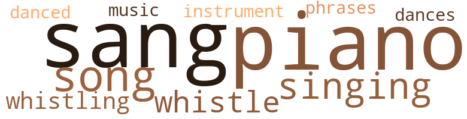
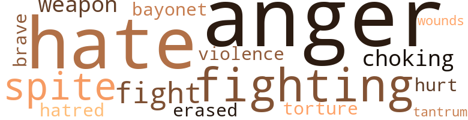

Music terms in the text
20 music-related terms matched in this text.
Most frequent terms in this topic: piano (3); sang (3); song (2); whistle (2); singing (2)

dance.n.01
Definition: an artistic form of nonverbal communication
| word |
sentence |
| dances |
They were seen together at dances , football games , and college lectures . |
dance.v.03
Definition: skip, leap, or move up and down or sideways
| word |
sentence |
| danced |
As they danced gaily among the crowd , Edwina realized that George was not a good dancer , but she was too happy to care how often he stepped on her foot or missed the step . |
music.n.01
Definition: an artistic form of auditory communication incorporating instrumental or vocal tones in a structured and continuous manner
| word |
sentence |
| Music |
She thought of the time her dad said to her , " Music should be found in every home . |
musical_instrument.n.01
Definition: any of various devices or contrivances that can be used to produce musical tones or sounds
| word |
sentence |
| instrument |
Edwina did n't like to practice ; she did n't like to count and so the teacher introduced that instrument of torture to her - the metronome . |
phrase.n.02
Definition: a short musical passage
| word |
sentence |
| phrases |
Slowly , very tenderly , George began , " Edwina , you do n't need to mention the usual high-sounding phrases that women generally use in rejecting a man , just to make me feel better . |
piano.n.01
Definition: a keyboard instrument that is played by depressing keys that cause hammers to strike tuned strings and produce sounds
| word |
sentence |
| piano |
Walking aimlessly around in the living room , she sat down to her piano . |
| piano |
The ability to play a piano well is a noble accomplishment . " |
| piano |
He had purchased this same piano for her for her seventh birthday , taught her the scales and then selected a teacher for her , Miss Emily Blousine , who promptly came to the house weekly to give her a music lesson . |
sing.v.02
Definition: produce tones with the voice
| word |
sentence |
| sang |
They discussed their lessons and sang popular songs before eating , then played games , as Mrs. Rustin and Aunt Harriet joined in the fun . |
| sang |
As Edwina forced a smile , two robins , with their heads together , sang sweetly . |
| sang |
When she joined in the singing of the class song , they would n't know that she did n't remember the words or that she sang only a few disconnected bits of the lyrics . |
singing.n.01
Definition: the act of singing vocal music
| word |
sentence |
| singing |
When she joined in the singing of the class song , they would n't know that she did n't remember the words or that she sang only a few disconnected bits of the lyrics . |
| singing |
" She is more beautiful than ever tonight , " George thought as he looked at Edwina singing and enjoying the services . |
song.n.01
Definition: a short musical composition with words
| word |
sentence |
| songs |
They discussed their lessons and sang popular songs before eating , then played games , as Mrs. Rustin and Aunt Harriet joined in the fun . |
| song |
When she joined in the singing of the class song , they would n't know that she did n't remember the words or that she sang only a few disconnected bits of the lyrics . |
| song |
She thought of her class song and began humming it softly . |
whistle.v.01
Definition: make whistling sounds
| word |
sentence |
| whistle |
He could hear the train whistle blowing as he neared the New York Central Railroad Station . |
| whistle |
He puckered his lips to whistle , but smiled as he said aloud , " Brown eyes , curly hair , full lips and willowy . " |
| whistling |
Softly , he began whistling : " If I could be with you .... " Tall , handsome and broad-shouldered , George had trouble keeping his weight down to 175 pounds . |
| whistling |
" I think she is whistling , Marilee , " Mrs. Ames said smilingly . |
Violence terms in the text
25 violence-related terms matched in this text.
Most frequent terms in this topic: anger (4); fighting (3); fight (2); spite (2); hate (2)

anger.n.01
Definition: a strong emotion; a feeling that is oriented toward some real or supposed grievance
| word |
sentence |
| anger |
Edwina , as she continued to look at him , realized that anger is unleashed easier against those we love , but she refused to get angry with him , although she was not satisfied with his answer to her question . |
| anger |
Edwina noticed his restlessness , but thought it was a sign of anger and continued her talk about the very sick little girl . |
| anger |
Edwina had never seen him act like this before , but she still thought he was showing signs of anger . |
| anger |
In a fit of anger , he tried to take his sister out of the walker . |
bayonet.n.01
Definition: a knife that can be fixed to the end of a rifle and used as a weapon
| word |
sentence |
| bayonet |
I had a narrow escape - bombs bursting all around me , men screaming , bayonet attacks - but the twins are the innocent victims . |
erase.v.01
Definition: remove from memory or existence
| word |
sentence |
| erased |
Then I will be erased from the rolls of Emerson College as a student . |
fight.n.02
Definition: the act of fighting; any contest or struggle
| word |
sentence |
| fighting |
When asked by his grandmother about his fighting , he said angrily , " I do n't like my teacher . |
fight.n.05
Definition: a boxing or wrestling match
| word |
sentence |
| fight |
Almost every day at school he had a fight . |
fight.v.02
Definition: fight against or resist strongly
| word |
sentence |
| fight |
Mrs. Stevens took Theodore to a barbershop for a haircut , but Herman continued to tease him , and Theodore continued to fight . |
| fighting |
" He ' - s ... fighting again , Gram , " she muttered . |
| fighting |
" I 'm sorry your grandson has been fighting again , Mrs. Stevens . |
fit.n.01
Definition: a display of bad temper
| word |
sentence |
| tantrum |
Theodore threw a tantrum every time he saw it . |
gag.v.06
Definition: cause to retch or choke
| word |
sentence |
| choking |
Sitting quietly at a table waiting for his dinner he knew he would not enjoy , he found himself choking with tears . |
hate.n.01
Definition: the emotion of intense dislike; a feeling of dislike so strong that it demands action
| word |
sentence |
| hate |
She knew she could not hate him - hate is cancerous . |
| hatred |
She was overcome with a sudden momentary hatred for him as she watched her daughter walk slowly across the yard . |
hate.v.01
Definition: dislike intensely; feel antipathy or aversion towards
| word |
sentence |
| hate |
She knew she could not hate him - hate is cancerous . |
| hates |
" Her mother hates me , " he said out loud . |
malice.n.01
Definition: feeling a need to see others suffer
| word |
sentence |
| spite |
Edwina was unspoiled in spite of all the affection and attention showered upon her . |
| spite |
In spite of her close association with her daughter during the greater portion of Edwina 's life , Mrs. Rustin knew that she had never been able to replace or even measure up to Edwina 's ineradicable memory of her dad . |
pain.v.02
Definition: cause emotional anguish or make miserable
| word |
sentence |
| hurt |
" I thought a baby cried if he 's hungry , if something hurt him , or if it was time to change his diaper . |
torment.v.01
Definition: torment emotionally or mentally
| word |
sentence |
| torture |
Edwina did n't like to practice ; she did n't like to count and so the teacher introduced that instrument of torture to her - the metronome . |
violence.n.01
Definition: an act of aggression (as one against a person who resists)
| word |
sentence |
| violence |
The violence of the storm of the night before had faded , leaving faint hope . |
weapon.n.01
Definition: any instrument or instrumentality used in fighting or hunting
| word |
sentence |
| weapon |
This she had done without trying , or even realizing what a weapon it was until Ethel Clymers , a classmate , laughingly told her she was the best tennis player in their club . |
weather.v.01
Definition: face and withstand with courage
| word |
sentence |
| brave |
Next to the picture was his favorite motto : " The young and brave will succeed . " |
wound.n.01
Definition: an injury to living tissue (especially an injury involving a cut or break in the skin)
| word |
sentence |
| wounds |
George Scott was a very happy man when his doctor told him that his wounds would require further hospital treatment and that he was returning home . |
Religion terms in the text
29 religion-related terms matched in this text.
Most frequent terms in this topic: church (11); God (6); adoration (3); faith (2); prayer (2)

church.n.02
Definition: a place for public (especially Christian) worship
| word |
sentence |
| church |
Mrs. Ames , a devout woman , tormented by the unrealities of life and death , was comforted as she thought of her church . |
| church |
An active member of the First F'resbyterian Church , she was agreeably surprised to note that her grandson was very quiet and attentive while in church . |
| church |
As soon as she left the church , Theodore started crying again . |
| church |
When I took him to church he was very quiet and seemed to be listening to the minister , " Mrs. Ames tearfully told her sister . |
| church |
" How does he know he is in church , Frances ? " |
| church |
" I do n't know , but he stops crying the minute I enter the church door . " |
| church |
Since my house is closer to the church , I 'll keep him a few days for you . |
| church |
He cries continuously , unless he is being fed , asleep , or when I take him to church . |
| church |
I take him to the yard when I return from the church . |
| church |
" Sunday , we will attend Trinity Church , built in 1764 , said to be the oldest church in the city . |
church.n.04
Definition: the body of people who attend or belong to a particular local church
| word |
sentence |
| church |
" I 'll explain this to Dr. Burden and ask him if we can take him to the nursery of the church daily . |
| Church |
" Sunday , we will attend Trinity Church , built in 1764 , said to be the oldest church in the city . |
god.n.03
Definition: a man of such superior qualities that he seems like a deity to other people
| word |
sentence |
| God |
" Edwina , I made a solemn promise to Almighty God when I was deathly sick in the army hospital , that I would George did not finish his sentence , but looked directly at Edwina as she sat watching him closely . |
| God |
We must believe in God and incorruptibility of the soul . " |
| God |
God has given us many mentors , but surely war is the most tormenting . |
| God |
I made a solemn promise to God that I would find my twins and support them , as soon as I recovered and was released from the army . |
| God |
He realized , in due time , that he would never have peace of mind or be able to sleep restfully until he asked God to forgive him for deserting two very small , innocent , helpless chitdren . |
| God |
She felt her lips moving in silent prayer , giving thanks to God for her accomplishments . |
godhead.n.01
Definition: terms referring to the Judeo-Christian God
| word |
sentence |
| Almighty |
" Edwina , I made a solemn promise to Almighty God when I was deathly sick in the army hospital , that I would George did not finish his sentence , but looked directly at Edwina as she sat watching him closely . |
prayer.n.01
Definition: the act of communicating with a deity (especially as a petition or in adoration or contrition or thanksgiving)
| word |
sentence |
| prayer |
She felt her lips moving in silent prayer , giving thanks to God for her accomplishments . |
prayer.n.04
Definition: a fixed text used in praying
| word |
sentence |
| prayer |
Immediately , Edwina was so moved she uttered a prayer : " O , stars bright , deliver me from my doubts and worry . " |
religion.n.01
Definition: a strong belief in a supernatural power or powers that control human destiny
| word |
sentence |
| faith |
" I have been extremely selfish , thinking more of my personal problems than of you , at times , but you must have faith in me . |
| faith |
" You know , Edwina , faith is like a very small seed - you plant it and watch it grow . |
sermon.n.02
Definition: a moralistic rebuke
| word |
sentence |
| sermon |
As Dr. Burden delivered his sermon , Theodore seemed to listen as if he really understood what the minister was saying . |
temple.n.03
Definition: an edifice devoted to special or exalted purposes
| word |
sentence |
| temples |
Forty-seven years old , he had thick brown hair , greying slightly at his temples , and deep , piercing , very unusual tawny eyes . |
worship.n.02
Definition: a feeling of profound love and admiration
| word |
sentence |
| adoration |
She felt a great seizure of adoration as she held the closed album to her breast with her arms crossed tightly around it . |
| adoration |
Mrs. Rustin sat filled with adoration as she watched her daughter . |
| adoration |
As Edwina stood dressed in her new blue dress ready for school , Mrs. Rustin looked at her with more adoration than she had ever accorded anyone . |
worship.v.02
Definition: show devotion to (a deity)
| word |
sentence |
| worshipped |
George Washington worshipped there during his term as president of the United States . |